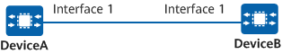

Example for Configuring ALS
Networking Requirements
If an optical fiber link is faulty, to save energy, the lasers on the optical modules are required to automatically stop emitting pulses and only resume after the link recovers.

In this example, interface1 represents 10GE0/0/1.
Figure 1 Network diagram for configuring ALS

Configuration Roadmap
The configuration roadmap is as follows:
Enable ALS on the interfaces so that the lasers automatically stop emitting pulses if a link is faulty.
Set the restart mode of the lasers to the automatic restart mode so that the lasers resume emitting pulses after the link recovers.
Procedure
- Configure ALS on the interfaces and set a restart mode of the lasers.# Enable ALS on 10GE0/0/1 of DeviceA and set the restart mode of the laser to automatic.
<HUAWEI> system-view [HUAWEI] sysname DeviceA [DeviceA] interface 10ge 0/0/1 [DeviceA-10GE0/0/1] als enable [DeviceA-10GE0/0/1] als restart mode automatic [DeviceA-10GE0/0/1] quit
# Enable ALS on 10GE0/0/1 of DeviceB and set the restart mode of the laser to automatic.
<HUAWEI> system-view [HUAWEI] sysname DeviceB [DeviceB] interface 10ge 0/0/1 [DeviceB-10GE0/0/1] als enable [DeviceB-10GE0/0/1] als restart mode automatic [DeviceB-10GE0/0/1] quit
Verifying the Configuration
- Check the ALS configuration on the interface of DeviceA.
<DeviceA> display als interface 10ge 0/0/1 -------------------------------------------------------------------------------------- Interface ALS Status Laser Status Restart Mode Interval(s) Width(s) -------------------------------------------------------------------------------------- 10GE0/0/1 Enable On Auto 100 2 --------------------------------------------------------------------------------------
- Check the ALS configuration on the interface of DeviceB.
<DeviceB> display als interface 10ge 0/0/1 -------------------------------------------------------------------------------------- Interface ALS Status Laser Status Restart Mode Interval(s) Width(s) -------------------------------------------------------------------------------------- 10GE0/0/1 Enable On Auto 100 2 --------------------------------------------------------------------------------------